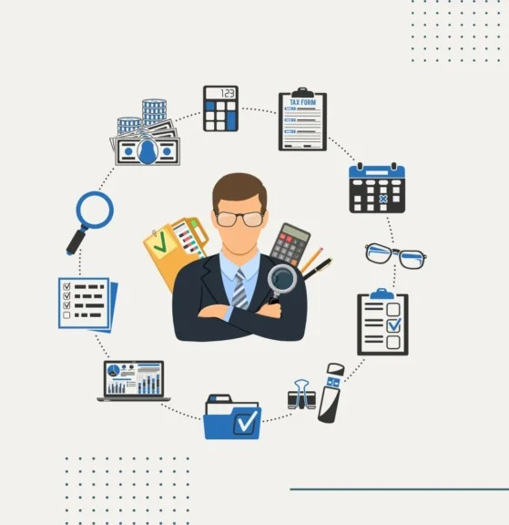

1. Introduction to Accounting
Accounting is the practice of keeping track of company transactions. Transactions are compiled, examined and reported to oversight, regulatory and tax authorities as part of this process. The financial statements used in accounting are a concise summary of financial transactions over an accounting period, summarizing a company's operations, financial position and cash flows. (Fernando, 2024)
2. Scope & Purpose of Accounting
2.1 Scope of Accounting
Accounting covers a wide range of tasks that are essential to every sector. An organization's financial stability and regulatory compliance are strengthened by the unique skills and knowledge that each function in this domain brings to the table. The following list includes numerous well-known accounting occupations that are essential to the financial environment:
Auditor
Internal or external auditors play an essential role for safeguarding assets, confirming the accuracy of financial statements and ensuring that organizations adhere to financial standards and laws.
Forensic Accountant
A forensic accountant keeps a check on both internal and external activity in order to look into a person's or company's transactions.
Tax Accountant
A tax accountant strategically arranges the best possible corporate structure to reduce tax obligations and guarantees that tax reporting is done.
Managerial Accountants
Managerial accountants examine financial transactions in order to offer strategic, well-considered advice, frequently pertaining to the production of goods.
2.2 Purpose of Accounting
Accounting is a critical function that helps a company's strategic planning, growth, and compliance needs. Accounting staff may not have regular interactions with customers, product developers, or manufacture employees, but they play an important role in assuring the organization's financial health and stability.
Accounting is critical to a company's growth. An organization cannot make informed financial decisions through forecasting if it lacks insight into its business performance. Without accounting, a firm would be unable to identify its best-selling items, calculate departmental profitability or understand the influence of overhead expenditures on its bottom line.
Accounting is a key part in obtaining money. Investors require financial statements to analyses a company's financial health before investing funds. Similarly, lenders frequently require enterprises to furnish accounting-compliant financial statements as part of the loan application process.
Accounting is necessary for firms to handle their money successfully. Companies frequently provide credit to clients, allowing them to pay for goods or services over time rather than at the time of purchase. Without effective accounting standards, a corporation may struggle to keep track of existing receivables and payment deadlines. Accounting is also necessary for public corporations, which must submit periodic financial statements in accordance with SIRF or IFRS. Failure to do so may result in the company being delisted from an exchange. Furthermore, noncompliance with tax accounting requirements might result in fines and penalties.
3. Role of Financial Accounting in Decision Making
3.1 Role of Financial Accounting in the Decision-Making Process
The Function of Finance in Making Strategic Decisions
A business's long-term strategic decision-making process heavily relies on finance. It offers the data and analysis required to determine possible risks and possibilities as well as assess the financial viability of strategic projects.
One of the most important ways that finance influences the process of making strategic decisions is through financial forecasting and the evaluation of financial risks related to such decisions.
Financial reporting and analysis sometimes concentrate on short-term outcomes, whereas strategic decisions usually have long-term effects. It might be difficult to strike a balance between long-term strategic objectives and the requirement for immediate financial performance.
Sophisticated financial modelling and analysis are frequently needed for strategic decisions. Making decisions frequently takes place in a setting without access to accurate and comprehensive information. Consequently, it's critical to be able to generate results depending on many hypotheses.
It might take a lot of time and resources to create thorough and accurate financial models. Developing models that are easily adaptable to changing assumptions or an increase in the number of assumptions is a difficulty.
3.2 Financial Accounting Meeting Stakeholder Needs & Expectations
Accountants must balance the needs of various stakeholders. This has a direct impact on the company's sustainability and performance. Each group has different interests and needs. Effective management of these can result in a pleasant business atmosphere and improve the organization's reputation. Stakeholder management fosters trust and long-term connections, which are essential for a company's resilience and growth. Understanding and incorporating stakeholder expectations can boost innovation and competitiveness, which benefits the firm.
Provide Clear Financial Reports
Shareholders require clear, transparent financial reports and insights. This demonstrates the company's financial strength and strategic orientation. It comprises strategic storylines that go beyond financial indicators to provide a holistic picture of performance and prospects. The accounting must also ensure that the company's financial strategy generate long-term growth while safeguarding and increasing shareholder value. (DeMar, 2024)
4. Accounting Meeting the Needs & Experiences of Society
Accounting is crucial to the operation of the economy. It gives the data required to make sound judgments about investment, resource allocation, and economic policy. Accounting helps to guarantee that financial markets are efficient and transparent, which is critical for economic growth and stability.
Accounting is also important for society as a whole. It provides individuals and organizations with the tools and knowledge they need to manage their finances successfully. Accounting helps to guarantee that financial transactions are precise and transparent, which promotes trust and confidence in financial systems. This is necessary for the smooth operation of society and the economy.
5. Branches of Accounting
Accounting has several diverse branches, all of which were developed in response to the many kinds of accounting data required by various stakeholders, such as suppliers, creditors, government, tax authorities and business owners.
Financial Accounting
Financial accounting is concerned with the recording and classification of a company's financial transactions, as well as the preparation and presentation of financial statements to internal and external stakeholders. While preparing financial statements, careful adherence to generally accepted accounting rules must be maintained. Financial accounting is concerned with the study of historical data.
Management Accounting
Management accounting, sometimes known as managerial accounting, primarily offers information for internal users, or the company's management. Management accounting covers the information used to make managerial decisions. This branch of accounting may not precisely adhere to GAAP. Budgeting and forecasting, cost analysis, financial analysis and the evaluation of company choices are all examples of management accounting activities.
Cost Accounting
Cost accounting is frequently viewed as a part of management accounting. It relates to the recording, and analysis of manufacturing-related expenditures. Manufacturing businesses benefit greatly from this discipline of accounting because their costing processes are often quite complex.
Cost accounting employs a variety of costing approaches, standards and concepts to assist businesses in developing budgets for cost control and efficiency.
Tax Accounting
This branch of accounting assists consumers in adhering to tax-related regulations. It includes tax planning and return preparation, as well as income and other tax determination, tax advising services, including an analysis of the effects of tax decisions, legal techniques for tax minimization, and other tax-related issues.
Auditing
Auditing is the process of evaluating the acceptability of an organization's internal control system by checking its policies, procedures, segregation of roles, authorization levels and other management-implemented controls.
6. Job Skills Set and Competencies of Accounting
Being an accountant takes more than just technical abilities. Strong communication and organizational talents are equally vital.
Prepare and Report on Financial Statements
Accountants must know how to prepare and present financial statements. This covers balance sheets, income statements and cash flow statements. To prepare a financial statement, an accountant gathers, verifies and categorizes financial data. Financial statement reporting demands specific expertise. The greatest financial reports communicate complicated facts in an understandable manner to all stakeholders. These reports can then be used to evaluate a client's financial situation and weaknesses.
Communication
Accountants spend time in meetings with clients, stakeholders and coworkers. They frequently need to provide financial updates. In larger firms or businesses with more complex accounting requirements, accountants may also collaborate with one another.
Expert communication abilities are required to develop your accounting career. Most of the time, accounting managers talk to their direct reports, controllers, finance directors and coworkers from other areas who may not know as much about accounting terms. (Gallagher, 2022)
7. Role of Accounting in the Modern World
Technology Integration
The integration of technology breakthroughs, such as artificial intelligence and machine learning, has transformed the accounting profession. These advances improved the accuracy and efficiency of financial processes. Automation has reduced the human effort associated with traditional accounting activities, freeing accountants to focus on analytical and advisory roles.
Strategic Advice
Strategic advice services now require accountants. They currently provide a wide range of financial planning, risk reduction, and strategic decision-making advice to businesses. Accountants use financial data analysis to provide valuable insights that guide long-term strategic planning and opportunities for company expansion. (Digitisation, 'Big Data' and the transformation of accounting information, 2018)
8. Issues of Ethics Regulations and Competences
Ethical behavior in accounting is critical for ensuring transparency, integrity and accountability in financial reporting. Regulatory frameworks such as GAAP and IFRS establish standards for financial disclosure, while compliance measures prevent fraud and wrongdoing. (Team, 2024)
Ethics in Accounting
Accounting ethics requires adherence to rules of conduct, professional standards, and codes of conduct in all aspects of accounting practice. Accountants are expected to show integrity, objectivity, competence, confidentiality, and professionalism in their work. Financial reporting, auditing, tax compliance and client relationships are all examples of ethical dilemmas. Ethical decision-making entails identifying these issues, weighing alternatives and selecting actions that uphold ethical standards and serve the public interest.
Regulations
International Financial Reporting Standards (IFRS), which are established by the International Accounting Standards Board (IASB), offer a worldwide framework for financial reporting and guarantee the comparability and consistency of financial statements across nations and sectors. (Team, 2024)
Competences
Compliance with the regulations, statutes, and standards that govern the accounting industry is important. The maintenance of financial records and the creation and display of reports are included in this. In addition to many state, federal, and international duties, accountants must make sure their operations comply with a variety of tax laws and regulations. Verifying that financial practices adhere to the established standards of accounting bodies requires routine audits. In order to preserve confidence among investors and in markets, these audits are essential.
Reliability and Risk
Adherence to ethical codes, regulations, and laws is critical for establishing trust and providing accurate financial information. Noncompliance or ethical issues can have serious consequences for businesses, including penalties, reputational damage, and a loss of stakeholder trust. Risk in these areas is critical for a company's credibility, long-term viability and market share.
References
Fernando, J. (2024). Accounting Explained With Brief History and Modern Job Requirements. [online] Investopedia. Available at: https://www.investopedia.com/terms/a/accounting.asp [Accessed 20 SEP. 2024].
Bragg, S. (2024). AccountingTools. [online] AccountingTools. Available at: https://www.accountingtools.com/articles/what-is-the-purpose-of-accounting.html [Accessed 20 SEP. 2024].
DeMar, E. (2024). Stakeholder Expectations: How to Balance Them as a CFO. [online] DeMar Consulting Group. Available at: https://demarconsultinggroup.com/insights/balancing-stakeholder-expectations-in-the-modern-business-environment-a-cfos-guide/ [Accessed 15 OCT. 2024].
Gallagher, M. (2022). The Accounting Skills You Need For A Successful Career. [online] Forbes Advisor. Available at: https://www.forbes.com/advisor/education/business-and-marketing/skills-for-accounting-career/ [Accessed 01 Nov. 2024].
Digitisation, 'Big Data' and the transformation of accounting information. (2018). Accounting and Business Research. [online] doi:https://doi.org/10.1080//00014788.2014.910051.
Team, C. (2024). IFRS vs. US GAAP. [online] Corporate Finance Institute. Available at: https://corporatefinanceinstitute.com/resources/accounting/ifrs-vs-us-gaap/ [Accessed 05 Nov. 2024].